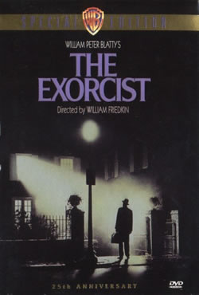
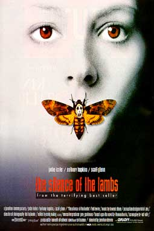
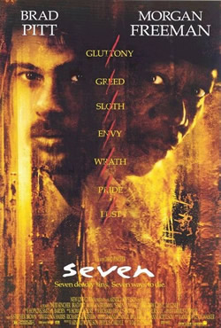
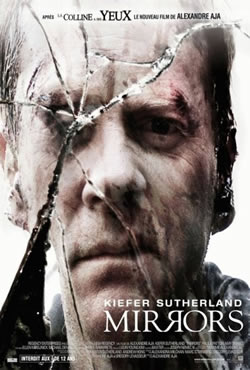
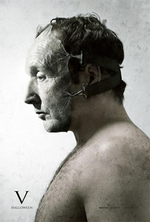

Ano: 1973
País: EUA
Ficha Técnica:
Título no Brasil: O Exorcista
Título Original: The Exorcist
País de Origem: EUA
Gênero: Terror
Classificação etária: 16 anos
Tempo de Duração: 123 minutos
Ano de Lançamento: 1973
Site Oficial: http://www.theexorcist.net
Estúdio/Distrib.: Warner Bros. / Hoya Productions
Direção: William Friedkin
Elenco:
Ellen Burstyn .... Chris MacNeil
Max von Sydow .... Padre Merrin
Lee J. Cobb .... Tenente Kinderman
Kitty Winn .... Sharon Spencer
Jack MacGowran .... Burke Dennings
Jason Miller .... Padre Damien Karras
Linda Blair .... Regan MacNeil
Reverendo William O'Malley .... Padre Dyer
Barton Heyman .... Dr. Klein
Peter Masterson .... Barringer
Rudolf Schündler .... Karl
Gina Petrushka .... Willi
Robert Symonds .... Dr. Taney
Reverendo Thomas Birmingham .... Reitor da Universidade
|
Sinopse:
Em Georgetown, Washington, uma atriz vai gradativamente tomando consciência
que a sua filha de doze anos está tendo um comportamento completamente
assustador. Deste modo, ela pede ajuda a um padre, que é também
um psiquiatra, e este chega a conclusão de que a garota está
possuída pelo demônio. Ele solicita então a ajuda
de um segundo sacerdote, especialista em exorcismo, para tentar livrar
a menina desta terrível possessão.
|
|

Ano: 1991
País: EUA
Ficha Técnica:
Título no Brasil: O Silêncio dos Inocentes
Título Original: The Silence of the Lambs
País de Origem: EUA
Gênero: Suspense
Tempo de Duração: 114 minutos
Ano de Lançamento: 1991
Site Oficial:
Estúdio/Distrib.:
Direção: Jonathan Demme
Elenco:
Anthony Hopkins .... Hannibal Lecter
Jodie Foster .... Clarice Sterling
Lawrence A. Bonney .... Instrutor do FBI
Kasi Lemmons .... Ardelia Mapp
Lawrence T. Wrentz .... Agente Burroughs
Scott Glenn .... Jack Crawford
Anthony Heald .... Dr. Frederick Chilton
Frankie Faison .... Barney
Stuart Rudin .... Miggs
Leib Lensky .... Sr. Lang
Brooke Smith .... Catherine Martin
Ted Levine .... Jaime Gumb
Pat McNamara .... Xerife Perkins
Kenneth Utt .... Dr. Akin
Diane Baker .... Senadora Ruth Martin
Don Butlen .... Roden
Masha Skorobogatov .... Jovem Clarice
|
Sinopse:
Agente do FBI (Jodie Foster) é destacada para encontrar assassino
que arranca a pele de suas vítimas. Para entender como ele pensa,
ela procura um periogoso psicopata (Anthony Hopkins), encarcerado sob
a acusação de canibalismo.
.
|
|

Ano: 1995
País: EUA
Ficha Técnica:
Título no Brasil: Seven - Os Sete Crimes Capitais
Título Original: Seven
País de Origem: EUA
Gênero: Policial
Classificação etária: 18 anos
Tempo de Duração: 128 minutos
Ano de Lançamento: 1995
Site Oficial:
Estúdio/Distrib.: Playarte Home Video
Direção: David Fincher
Elenco:
Morgan Freeman .... Detetive William Somerset
Brad Pitt .... Detetive David Mills
Daniel Zacapa .... Detetive Taylor
Gwyneth Paltrow .... Tracy Mills
John Cassini .... Oficial Davis
Peter Crombie .... Dr. O'Neill
Kevin Spacey .... John Doe
Richard Portnow .... Dr. Beardsley
R. Lee Ermey .... Capitão da polícia
|
Sinopse:
Dois policiais, um jovem e impetuoso (Brad Pitt) e o outro maduro
e prestes a se aposentar (Morgan Freeman), são encarregados
de uma periogosa investigação: encontrar um serial killer
que mata as pessoas seguindo a ordem dos sete pecados capitais.
|
|

Ano: 2006
País: EUA/Reino Unido
Ficha Técnica:
Título no Brasil: Espelhos do Medo
Título Original: Mirrors
País de Origem: EUA / Romênia
Gênero: Terror
Tempo de Duração: 110 minutos
Ano de Lançamento: 2008
Estréia no Brasil: 17/10/2008
Site Oficial: http://www.mirrorsmovie.com
Estúdio/Distrib.: Fox Filmes
Direção: Alexandre Aja
Elenco:
Kiefer Sutherland ... Ben Carson
Paula Patton ... Amy Carson
Cameron Boyce ... Michael Carson
Erica Gluck ... Daisy Carson
Amy Smart ... Angela Carson
Mary Beth Peil ... Anna Esseker
John Shrapnel ... Lorenzo Sapelli
Jason Flemyng ... Larry Byrne
Tim Ahern ... Dr. Morris
Julian Glover ... Robert Esseker
Josh Cole ... Gary Lewis
Ezra Buzzington ... Terrence Berry
Aida Doina ... Rosa
Ioana Abur ... Front Desk Sister
Darren Kent ... Jimmy Esseker
Roz McCutcheon ... Jimmy's Mother
Adina Rapiteanu ... Anna
William Meredith ... Doctor
Bart Sidles ... Police Inspector
Cai Man ... Neighbor #1
Jingdong Qin ... Neighbor #2
Anca Damacus ... Burning Woman
Tudor Stroescu ... Delivery Man
Liliana Donici ... Mirror Person #1
Aurelia Radulescu ... Mirror Person #2
George Dumitrescu ... Mirror Person #3
Irina Saulescu ... Mirror Person #4
Valeriu Pavel ... Mirror Person #5
|
Sinopse:
Do mesmo diretor de "Viagem Maldita", ESPELHOS DO MEDO é
a história aterrorizante de um atormentado ex-policial que precisa
salvar a família de um mal inominável que está
usando espelhos como entrada para sua casa. Ben Carson (KIEFER SUTHERLAND)
já teve dias melhores. Faz quase um ano desde que o detetive
de gênio inconstante foi suspenso do Departamento de Polícia
de Nova York por ter atingido com um tiro outro policial infiltrado,
um acidente que não lhe custou apenas o emprego, mas gerou o
alcoolismo e a raiva que o distanciaram da mulher e dos filhos e o deixaram
encolhido no sofá de sua irmã. Desesperado para retomar
sua vida e restabelecer os vínculos com a família, Carson
aceita um emprego como vigia noturno nas ruínas do incêndio
de uma loja de departamentos. O que antes era um símbolo de prosperidade
e imponência agora está decadente na escuridão,
como um navio fantasma, destruído por um grande incêndio
que levou as vidas de muitos inocentes. Enquanto patrulha os resquícios
escurecidos e sombrios da loja, ele começa a notar algo sinistro
nos espelhos enfeitados que adornam as paredes da loja. Há imagens
horripilantes refletidas nos gigantescos espelhos que chocam Carson.
Além de projetarem imagens hediondas do passado, os espelhos
parecem também manipular a realidade. Quando Carson vê
seu próprio reflexo sendo torturado, ele sofre os efeitos físicos
de suas visões fragmentadas. De repente, o ex-policial se descobre
lutando contra seus próprios fantasmas e os demônios que
seqüestraram seu reflexo, atormentando-o com convulsões,
hemorragia espontânea e um estado de quase sufocamento. Sua irmã
Angela (AMY SMART), solidária porém cética, não
dá importância a esses "pesadelos" bizarros,
considerando-os conseqüência do estresse e da culpa pelo
tiro acidental. Já a mulher de Carson, Amy (PAULA PATTON), uma
objetiva médica legista, é menos indulgente. O comportamento
cada vez mais estranho do marido a assusta, pois ela teme que ele coloque
os filhos em perigo. Mas uma ameaça muito mais mortal vem à
tona, presa nos espelhos e superfícies refletidas que permeiam
seu cotidiano. Quando Carson investiga o desaparecimento misterioso
de um segurança da loja e sua possível ligação
com suas visões pavorosas, ele percebe que uma força malévola
e sobrenatural está usando seu reflexo como um meio de aterrorizar
a ele e à família. Se ele tem alguma esperança
de salvar sua mulher e filhos de uma morte horrível, Carson terá
de desvendar a verdade por trás dos espelhos e convencer Amy
a ajudá-lo a combater a maior força maligna que já
enfrentou.
|
|

Ano: 2008
País: EUA
Título no Brasil: Jogos Mortais V
Título Original: Saw V
País de Origem: EUA
Gênero: Terror
Tempo de Duração: 88 minutos
Ano de Lançamento: 2008
Estréia no Brasil: 31/10/2008
Site Oficial: http://www.saw5.com
Estúdio/Distrib.: Buena Vista
Direção: David Hackl
Elenco:
Tobin Bell ... Jigsaw / John Kramer
Julie Benz ... Brit
Greg Bryk ... Mallick
Meagan Good ... Luba
Laura Gordon ... Ashley
Joris Jarsky ... Seth
Samantha Lemole ... Pamela Jenkins
Costas Mandylor ... Hoffman
Scott Patterson ... Agent Strahm
Alex Revan ... Grayson Blood
Mark Rolston ... Erickson
Carlo Rota ... Charles
Betsy Russell ... Jill Tuck
Al Sapienza ... Police Chief Logan
Sheila Shah ... FBI Agent
Shawnee Smith ... Amanda Young
Dana Sorman ... Receptionist
|
Sinopse:
Nesta quinta parte da série, Hoffman (Costas Mandylor) é
o único sobrevivente que pode dar continuidade ao legado do assassino
Jigsaw. Para isso ele tenta de todas as formas manter sigilo sobre o
fato. Mas quando seu segredo se vê ameaçado, Hoffman não
medirá esforços para eliminar aqueles que entram em seu
caminho.
|
|
|